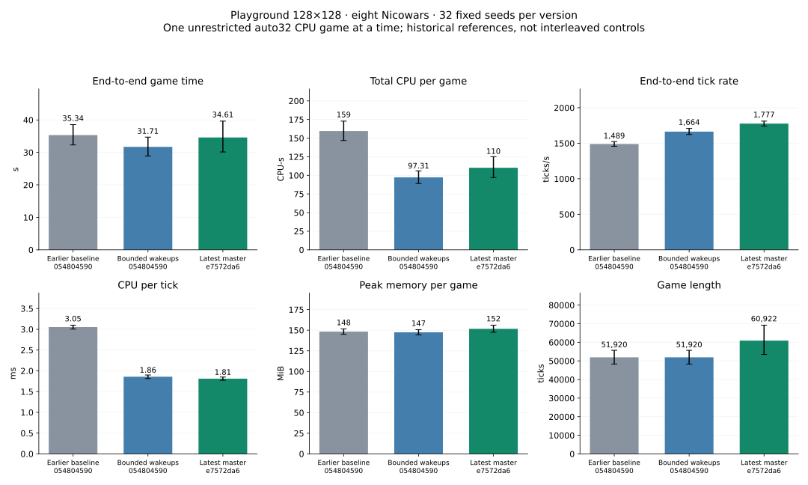

Release revision e7572da6be15566bf20086f40a73a0f4b7c2a83d, one unrestricted auto32 CPU game at a time, eight Nicowars on the fixed128×128 map, same32 game seeds. 32 winners and 0 caps.

| Metric (mean per game) | Earlier baseline 054804590 | Bounded wakeups 054804590 | Latest master e7572da6 |
|---|---|---|---|
| End-to-end game time (s) | 35.340 | 31.714 | 34.608 |
| Total CPU per game (CPU-s) | 159.478 | 97.309 | 110.227 |
| End-to-end tick rate (ticks/s) | 1,489.323 | 1,663.675 | 1,776.868 |
| CPU per tick (ms) | 3.054 | 1.858 | 1.811 |
| Peak memory per game (MiB) | 148.264 | 147.446 | 151.671 |
| Game length (ticks) | 51,920.000 | 51,920.000 | 60,922.000 |
| Metric | Change | Paired95% interval | Adverse seeds |
|---|---|---|---|
| End-to-end game time | +9.12% | [-5.89%, +26.10%] | 16/32 |
| Total CPU per game | +13.27% | [-1.62%, +30.13%] | 18/32 |
| End-to-end tick rate | +6.80% | [+2.76%, +10.45%] | 6/32 |
| CPU per tick | -2.54% | [-5.78%, +1.12%] | 10/32 |
| Peak memory per game | +2.87% | [-0.61%, +6.61%] | 18/32 |
| Game length | +17.34% | [+2.77%, +32.70%] | 20/32 |
| User CPU per game | +13.86% | [-1.54%, +31.34%] | 18/32 |
| System CPU per game | +8.25% | [-2.64%, +20.37%] | 18/32 |
| Voluntary context switches | +10.22% | [-1.62%, +23.33%] | 18/32 |
| Involuntary context switches | +14.23% | [-2.14%, +31.02%] | 19/32 |
Winner and ending tick agree with the earlier bounded-wakeup run on 0/32 seeds. Master changed hiring timing; differences in completion time include changed game trajectories as well as execution costs.
Mean per-game peak RSS and the observed maximum are distinct: latest maximum 181.84MiB. Latest aggregate tick rate: 1760.36 ticks/s; pooled CPU/tick: 1.809ms. Total CPU across latest completed games: 3527.25CPU-s.
Every game · Comparisons and intervals · Summary/methods · Raw audit
Across the completed games, total simulated ticks changed +17.34% and aggregate end-to-end tick rate changed +7.53%. Full completion time changed +9.12%. This is an accounting decomposition (total time = total ticks / aggregate tick rate), not proof that a tick does the same work on both engine versions. Mean recorded orders per game: 22,791 before versus 24,479 on latest.